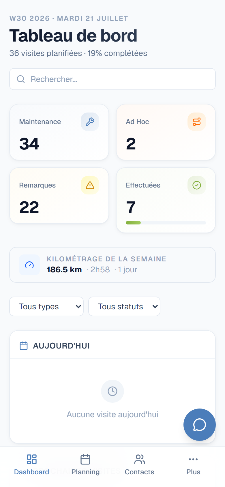
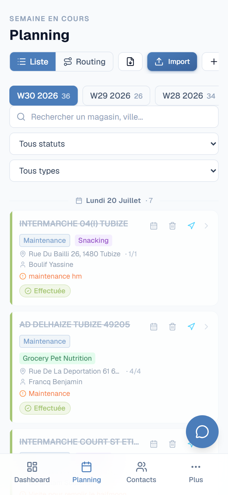
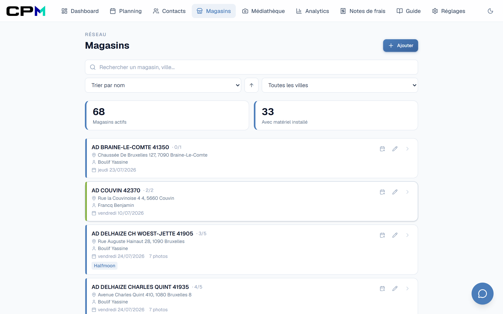
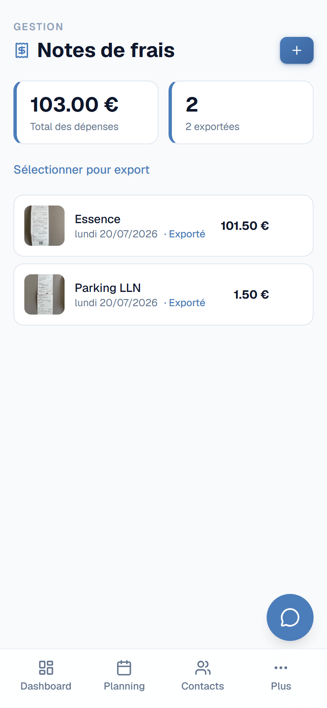
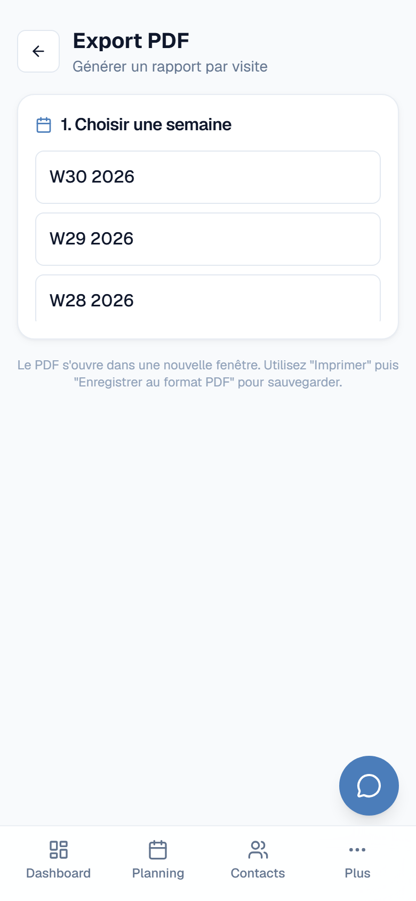
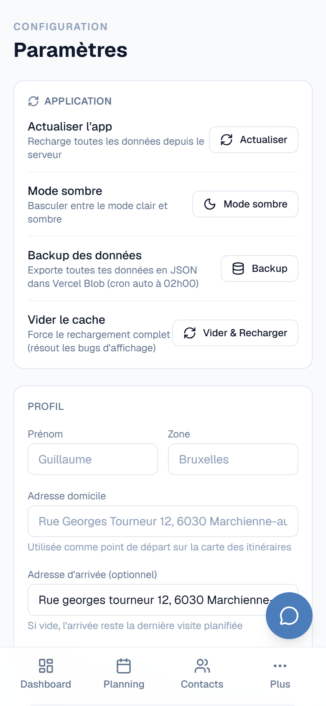
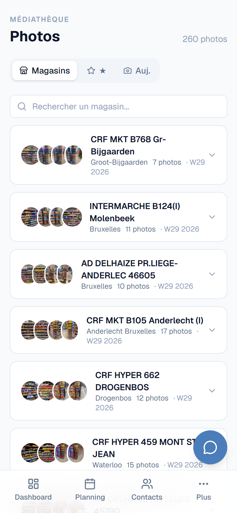
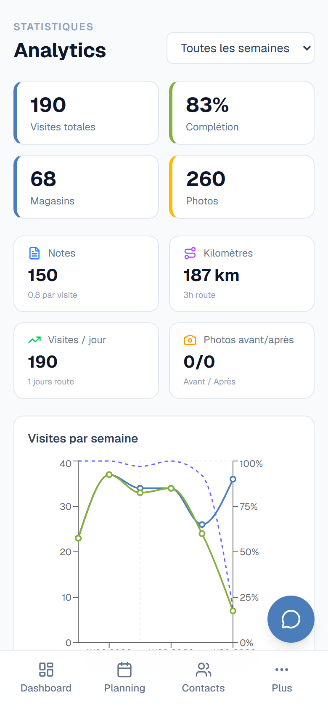
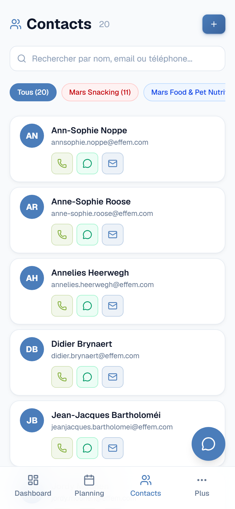

PROPOSITION INTERNE
MERCH
Une application de terrain simple, pensée par un merchandiser, pour les merchandisers.
Guillaume Dewez — Merchandiser CPM
Juillet 2026
Le point de départ
Un outil né du terrain, utilisé au quotidien depuis plusieurs mois.
Sur le terrain, on perd du temps sur l'administratif : rapports de visite, photos à trier,
notes de frais à remplir à la main, tournées à organiser. J'ai développé cette application
pour centraliser tout le flux de travail d'un merchandiser — sur mobile comme sur ordinateur.
Le flux de travail couvert
Planning→
Tournée→
Visite→
Photos & Notes→
Rapport→
Notes de frais
Planning & Tournées
📅
Planning hebdomadaire
Import du fichier Excel CPM, organisation des visites par jour avec drag & drop.
🗺️
Itinéraires optimisés
Carte interactive, calcul de trajet via OSRM, kilométrage et durée, ordre optimisé.
🧭
Navigation Waze
Bouton direct vers Waze pour chaque visite — départ magasin ou domicile.
📶
Mode hors-ligne
Changement de statut sans connexion, synchronisation automatique au retour.
Magasins & Visites
🏪
Fiches magasins
Coordonnées, assortment, type de visite, fréquence, responsable commercial.
📜
Historique par magasin
Toutes les visites passées, photos et notes d'un point de vente en un coup d'œil.
✅
Suivi des visites
Statuts (effectuée, en attente, reportée, annulée), type de matériel posé, remarques.
📷
Photos avant / après
Catégorisation automatique, upload compressé, sélection multiple, partage et export PDF.
📝
Notes de visite
Compte-rendu par visite, ajout rapide, historique consultable.
👥
Contacts
Répertoire des responsables de rayon, téléphone et email, organisé par équipe.
2
Administratif & Exports
La paperasse automatisée — ce qui prend du temps devient un clic.
Notes de frais
🧾
Saisie en tournée
Photo du ticket, montant, date et description — enregistré en quelques secondes sur le terrain.
📊
Export Excel officiel
Génération automatique dans le template Excel CPM (max. 12 notes par export), sans ressaisie.
📦
Export ZIP complet
Excel + PDF + photos justificatives individuelles dans un seul fichier, prêt à envoyer.
✓
Suivi des exports
Marquage automatique des notes déjà exportées pour éviter les doublons.
Rapports & Exports
📄
Rapport de visite PDF
Photos catégorisées + notes + infos magasin, généré en un clic, format A4 imprimable.
📚
Export groupé par semaine
Tous les rapports de visite d'une semaine en un seul document PDF.
Analytics & Assistant IA
📈
Statistiques
Taux de complétion, visites par semaine, kilomètres, photos avant/après, activité par jour.
🤖
Assistant IA
Chat avec GPT-4o, contexte Mars injecté : questions sur les visites, contacts, matériel.
🖼️
Médiathèque
Toutes les photos regroupées par magasin, favoris, recherche et filtrage.
📖
Guide matériel
Référence visuelle des types de matériel merchandising Mars.
Paramètres & Technique
⚙️
Personnalisation
Profil utilisateur, zone, adresses domicile/travail pour le calcul d'itinéraire, thème sombre/clair.
🔐
Sécurité & Sauvegardes
Connexion par compte, sauvegarde manuelle, changement de mot de passe, glossaire personnalisable.
3
Aperçu de l'application — 1/2
Interface mobile — pensée pour une utilisation en magasin.

Dashboard — prochaine visite, stats, kilométrage

Planning — visites par jour, import Excel

Fiches magasins — recherche et tri

Notes de frais — photo du ticket, export

Export — rapports PDF par visite

Paramètres — profil, thème, glossaire
4
Aperçu de l'application — 2/2
Photos, statistiques, contacts et assistant IA.

Médiathèque — photos par magasin, favoris

Analytics — graphiques et stats

Contacts — répertoire par équipe

Assistant IA — chat avec contexte Mars
5
Ce que ça apporte concrètement
Des gains simples et mesurables au quotidien.
1
Moins de temps administratif
La note de frais mensuelle passe de la saisie manuelle dans Excel à quelques clics :
les dépenses saisies au fil du mois génèrent automatiquement le document officiel rempli
avec les photos justificatives.
2
Tout au même endroit
Photos, rapports, contacts, planning et notes de frais liés entre eux — plus de photos
perdues dans la galerie du téléphone ni de notes éparpillées entre Excel, papier et mail.
3
Utilisable partout, sans installation
Application web accessible sur téléphone, tablette et ordinateur. Interface pensée mobile
d'abord, pour une utilisation en magasin. Fonctionne même hors connexion.
4
Des exports prêts à l'emploi
Les destinataires reçoivent des fichiers standards (Excel, PDF, ZIP avec photos) — aucun outil
spécifique requis de leur côté. Le format Excel officiel CPM est respecté.
5
Un assistant IA intégré
Questions rapides sur la journée, les contacts ou le matériel — l'assistant connaît le contexte
Mars et répond instantanément, sans chercher dans un manuel.
En pratique
Application web sécurisée (connexion par compte), hébergée dans le cloud, sauvegardes automatiques.
Développée et maintenue en interne — elle évolue selon les besoins réels du terrain.
Une démonstration en conditions réelles est possible à tout moment.
Je l'utilise tous les jours en tournée.
Je serais ravi de vous la montrer en 15 minutes.
6